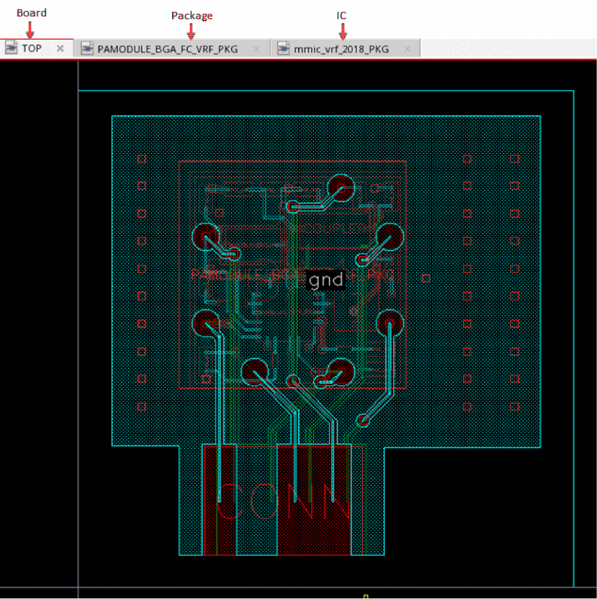
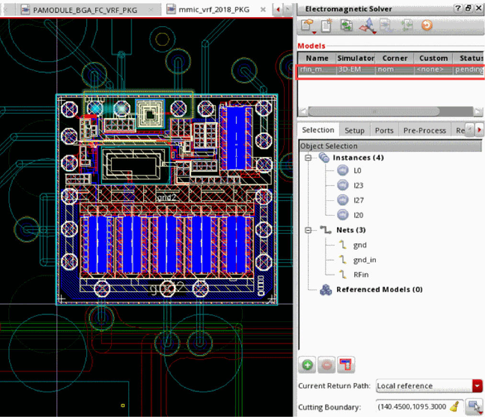
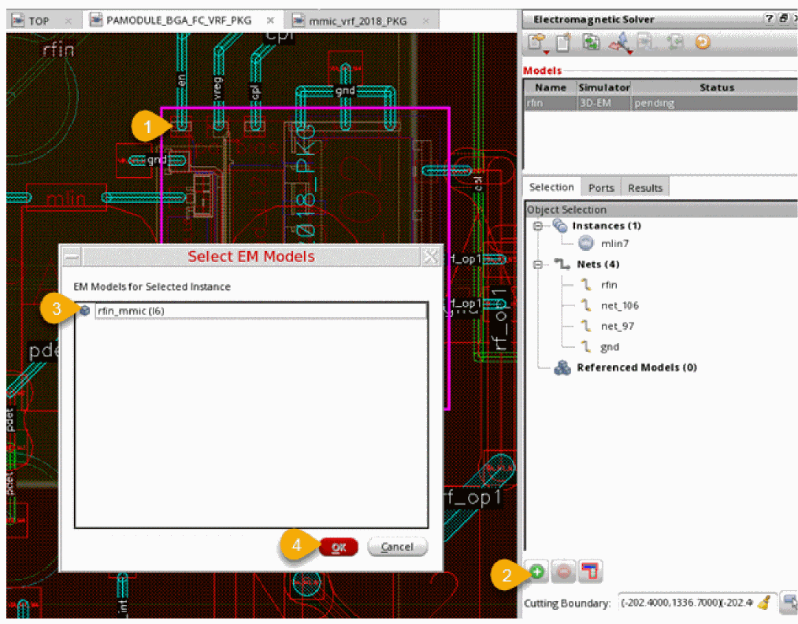
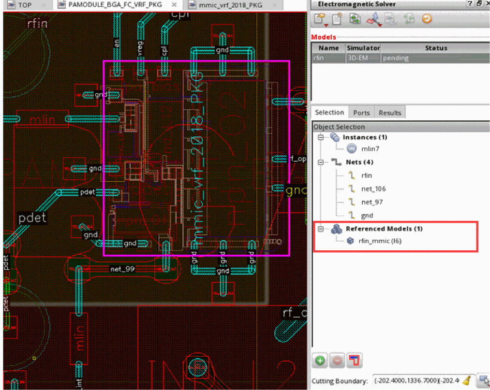
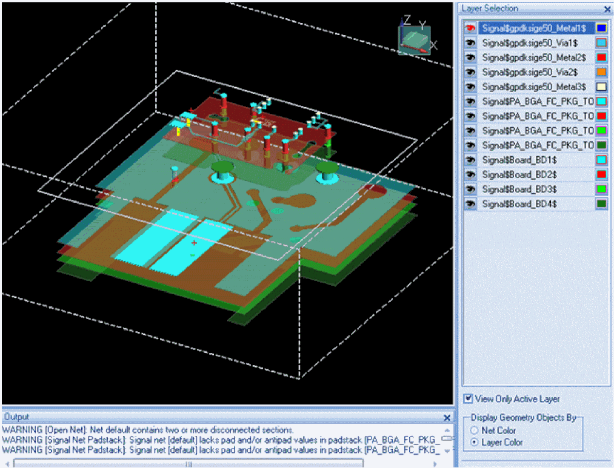

Extracting Models for a Cross-Fabric Design
Cross-fabric extraction allows you to create a model across IC, package and board. This lets you capture the full coupling between fabrics in a single 3D simulation. Virtuoso Layout MXL takes care of all the work normally involved in combining IC and package geometry into a merged model.
You can read a blog on this feature
The Electromagnetic Solver assistant allows you to extract models for a cross-fabric design using Clarity 3D Solver simulator. The objective is to pick objects from different fabrics and generate a common model for them.
A cross-fabric extraction typically runs on a layout cellview that contains at least two different fabrics. Multiple fabrics of either of the IC, package, module, or a board type can be stacked up. Each fabric can have its own technology database and can be connected with other fabrics using balls, bumps, or wirebonds.
The following diagram shows an example of a layer stack containing two fabrics where the IC on top is flipped and connected using bumps:
In your designs, you can have ICs that are not flipped and are attached using bond wires, as shown in the following example.
For a cross-fabric model extraction in Virtuoso, you begin with the board layout cellview, which is the top fabric or cellview. The board contains an abstract instance of a package TILP Pcell. The package would further contain an abstract instance of an IC layout or another module. There can be various such layers depending on your design.
Each of the package, module, or IC layouts have their own models. For a cross-fabric design, the objective is to extract a model for the outer-most fabric. Each fabric in the stack would reference the models of other fabrics placed within it. For example, the package would reference the model for the IC instantiated in it.
If you have a layer stack ready for extraction, ensure that the following prerequisites are met:
- Each package and board fabric has a dielectric layer on top and bottom. If not already created, you can use the Layer Stack Editor command in the RF-Module menu to add dielectric layers.
- The height of the balls and bumps for each abstract instance equal to or higher than the height of the solder mask. You can use the Ball and Bump Editor command in the RF-Module menu to modify the dimensions.
Next, you can proceed with the steps given below to run model extraction for a cross-fabric design.
- Open the outer-most fabric in Virtuoso Layout MXL.
-
Choose Module – Edit-in-Concert to enable the Co-Design mode where you can view and edit die packages and their corresponding die layouts synchronously.
The following example of a sample design shows the board layout along with the package, and die layouts associated with it opened in the Co-Design mode.
 - Identify the objects you want to include in the cross-fabric model. These objects could include one or more nets, or instances from this layout.
-
If required, create a cutting boundary to define the area to be considered for this fabric.
You can create cutting boundaries at any level in a cross-fabric model. The cutting boundary for any level defines the region to be used for the fabric at that level. However, the cutting boundary defined for the top-most fabric again cuts through all the fabrics in the design. -
Following the bottom-up approach, open the layout of the lowest fabric and define a model using the required objects from this layout.
You can use the select one or more objects on the Selection tab to highlight all the objects on different fabrics.
For the example design shown above, if you select an inductor, two bumps, one MIMCAP, and three nets to be included in a model, the setup appears as shown below.
 -
Ensure that you choose the Clarity 3D Solver simulator for model generation.
Only Clarity 3D models with the Current Return Path set asLocal Referencecan be referenced from other models. - Create and validate ports.
-
Focus on the layout view for the fabric above the previous one and do the following:
-
Create a new model and choose the
Claritysimulator. - Select objects to be included from this layout.
-
Click the die abstract and click
on the Selection tab of Electromagnetic Solver assistant.
The Select EM Models form is displayed. All the models that can be referenced for the selected die abstract are listed in this form.If the list of EM models is empty, ensure that the models you want to reference are using the Clarity 3D simulator and have the Current Return Path set asLocal Reference. - Select a model to be included for the die abstract.
-
Click OK.
The selected model is shown in the Referenced Models tree on the Selection tab of the Electromagnetic Solver assistant, as shown below.
-
Create a new model and choose the
- Similarly, create models for all fabrics in the design and add reference for the die abstracts to be included in the model.
-
After defining the model at the top level, choose Simulation – Create and Edit to extract a
.clffile and send it to Clarity 3D Solver.
During this step, Virtuoso processes the selected shapes according to the settings given in the models. For example, it merges the IC stack, which appears as one in the Layer Manager in Clarity 3D Solver. -
Enable the 3D view in Clarity 3D window, and validate the fabric layers and selected objects.
For the above example, the 3D view of the model appears as shown below.
 -
Run simulation in Clarity 3D Layout to create n-ports that are saved in an S-param touchstone file.
The touchstone file produced by cross-fabric EM simulation contains a header with all nets and instances from all fabrics. -
Review the resulting ports on the Results tab of the Electromagnetic Solver assistant and proceed with the creation of an extracted view as explained in Creating Extracted Views from Models that you can use to run simulations in Virtuoso ADE Assembler.
Return to top